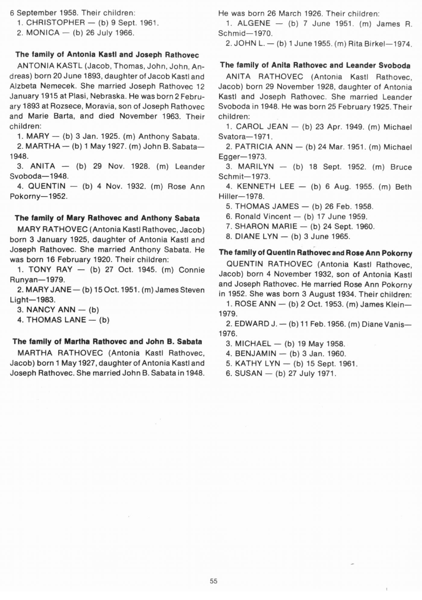

The book · The Family of Jacob Kastl
Page 55 The family of Antonia Kastl and Joseph Rathovec


Transcription
6 September 1958. Their children:
- CHRISTOPHER — (b) 9 Sept. 1961.
- MONICA — (b) 26 July 1966.
The family of Antonia Kastl and Joseph Rathovec
ANTONIA KASTL (Jacob, Thomas, John, John, Andreas) born 20 June 1893, daughter of Jacob Kastl and Alzbeta Nemecek. She married Joseph Rathovec 12 January 1915 at Plasi, Nebraska. He was born 2 February 1893 at Rozsece, Moravia, son of Joseph Rathovec and Marie Barta, and died November 1963. Their children:
- MARY — (b) 3 Jan. 1925. (m) Anthony Sabata.
- MARTHA — (b) 1 May 1927. (m) John B. Sabata—1948.
- ANITA — (b) 29 Nov. 1928. (m) Leander Svoboda—1948.
- QUENTIN — (b) 4 Nov. 1932. (m) Rose Ann Pokorny—1952.
The family of Mary Rathovec and Anthony Sabata
MARY RATHOVEC (Antonia Kastl Rathovec, Jacob) born 3 January 1925, daughter of Antonia Kastl and Joseph Rathovec. She married Anthony Sabata. He was born 16 February 1920. Their children:
- TONY RAY — (b) 27 Oct. 1945. (m) Connie Runyan—1979.
- MARY JANE — (b) 15 Oct. 1951. (m) James Steven Light—1983.
- NANCY ANN — (b)
- THOMAS LANE — (b)
The family of Martha Rathovec and John B. Sabata
MARTHA RATHOVEC (Antonia Kastl Rathovec, Jacob) born 1 May 1927, daughter of Antonia Kastl and Joseph Rathovec. She married John B. Sabata in 1948. He was born 26 March 1926. Their children:
- ALGENE — (b) 7 June 1951. (m) James R. Schmid—1970.
- JOHN L. — (b) 1 June 1955. (m) Rita Birkel—1974.
The family of Anita Rathovec and Leander Svoboda
ANITA RATHOVEC (Antonia Kastl Rathovec, Jacob) born 29 November 1928, daughter of Antonia Kastl and Joseph Rathovec. She married Leander Svoboda in 1948. He was born 25 February 1925. Their children:
- CAROL JEAN — (b) 23 Apr. 1949. (m) Michael Svatora—1971.
- PATRICIA ANN — (b) 24 Mar. 1951. (m) Michael Egger—1973.
- MARILYN — (b) 18 Sept. 1952. (m) Bruce Schmit—1973.
- KENNETH LEE — (b) 6 Aug. 1955. (m) Beth Hiller—1978.
- THOMAS JAMES — (b) 26 Feb. 1958.
- Ronald Vincent — (b) 17 June 1959.
- SHARON MARIE — (b) 24 Sept. 1960.
- DIANE LYN — (b) 3 June 1965.
The family of Quentin Rathovec and Rose Ann Pokorny
QUENTIN RATHOVEC (Antonia Kastl Rathovec, Jacob) born 4 November 1932, son of Antonia Kastl and Joseph Rathovec. He married Rose Ann Pokorny in 1952. She was born 3 August 1934. Their children:
- ROSE ANN — (b) 2 Oct. 1953. (m) James Klein—1979.
- EDWARD J. — (b) 11 Feb. 1956. (m) Diane Vanis—1976.
- MICHAEL — (b) 19 May 1958.
- BENJAMIN — (b) 3 Jan. 1960.
- KATHY LYN — (b) 15 Sept. 1961.
- SUSAN — (b) 27 July 1971.
People from the line of descent on this page
- Antonia Kastl b. 1893
- Regina Rerucha b. 1924
- Christopher George b. 1961
- Monica George b. 1966
- Joseph Rathovec 1893–1963
- Mary Rathovec b. 1925
- Martha Rathovec b. 1927
- Anita Rathovec b. 1928
- Quentin Rathovec b. 1932
- Anthony Sabata b. 1920
- Tony Ray Sabata b. 1945
- Mary Jane Sabata b. 1951
- Nancy Ann Sabata
- Thomas Lane Sabata
- John B. Sabata b. 1926
- Algene Sabata b. 1951
- John L. Sabata b. 1955
- Leander Svoboda b. 1925
- Carol Jean Svoboda b. 1949
- Patricia Ann Svoboda b. 1951
- Marilyn Svoboda b. 1952
- Kenneth Lee Svoboda b. 1955
- Thomas James Svoboda b. 1958
- Ronald Vincent Svoboda b. 1959
- Sharon Marie Svoboda b. 1960
- Diane Lyn Svoboda b. 1965
- Rose Ann Pokorny b. 1934
- Rose Ann Rathovec b. 1953
- Edward J. Rathovec b. 1956
- Michael Rathovec b. 1958
- Benjamin Rathovec b. 1960
- Kathy Lyn Rathovec b. 1961
- Susan Rathovec b. 1971
Transcriber’s notes
Page opens mid-sentence continuing the Regina Rerucha and Richard George entry from p.54. The Martha Rathovec entry runs from the foot of the left column to the top of the right column ('He was born 26 March 1926. Their children:'); joined. Lower ~40% of the page is blank (end of a section). Items 3 NANCY ANN and 4 THOMAS LANE of Mary Rathovec have '(b)' with no date, as printed. '6. Ronald Vincent' printed in mixed case (not caps), as printed. 'Alzbeta Nemecek' spelling here.